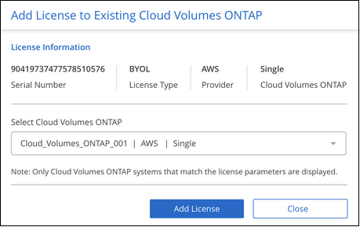
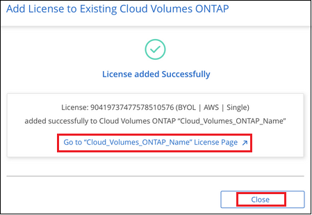

ドキュメントの変更をリクエスト
ドキュメントの変更をリクエスト GitHub で編集
GitHub で編集 寄稿者向けガイド
寄稿者向けガイドActive IQ データを使用して ONTAP クラスタを管理する
Cloud Manager の検出ページには、オンプレミス環境で検出されていない ONTAP クラスタが表示されます。いずれのクラスタでもディスクファームウェアまたはシェルフファームウェアを更新する必要があるかどうかや、オンプレミスシステムの購入時に付与されたすべての Cloud Volumes ONTAP ライセンスを使用しているかどうかが示されます。この情報は、から Cloud Manager に提供されます "Active IQ デジタルアドバイザ"。
未使用の Cloud Volumes ONTAP ノードベースのライセンスを表示する
購入したオンプレミス ONTAP ストレージシステムパッケージの多くには、 Cloud Volumes ONTAP のノードベースの無償ライセンスが含まれているため、 Cloud Manager でネットアップのクラウドストレージ製品を試用できます。ライセンスを使用して新しい Cloud Volumes ONTAP インスタンスを作成するか、または既存の Cloud Volumes ONTAP インスタンスにライセンスを適用して、容量を 368 TiB 拡張できます。
ネットアップサポートサイトのクレデンシャルに基づいて、未使用の Cloud Volumes ONTAP ライセンスがあるかどうかを確認することができます。

|
ノードベースライセンスの用語は、ライセンスの発行後 1 カ月目から始まります。たとえば、 2021 年 12 月 15 日にノードベースの BYOL ライセンスを取得すると、ライセンス期間は 2022 年 1 月 1 日（翌月の最初の日）から始まります。 |
-
Cloud Manager で、 * Discovery * タブをクリックします。
-
ページの下部にある [Licenses] タブをクリックします。

使用されていないライセンスごとに * ライセンスを使用 * ボタンが表示されます。
-
ライセンスをアクティブ化して使用を開始する場合は、 * ライセンスを使用 * をクリックします。

使用可能なライセンスを使用するためのオプションについては、次のタスクを参照してください。
未使用の Cloud Volumes ONTAP ライセンスを使用している
未使用のライセンスを使用して新しい Cloud Volumes ONTAP インスタンスを作成したり、既存の Cloud Volumes ONTAP インスタンスにライセンスの容量を拡張したりできます。ライセンスの容量は 368 TiB です。
_expires_column は、ライセンスが最後にアクティブになった日を示します。新しい Cloud Volumes ONTAP システムを作成すると、ライセンスの有効期限が切れます。既存の Cloud Volumes ONTAP システムを更新する場合は、既存のライセンスが拡張される期間を指定します。
License Type'Hyperscaler'_Model Type_columns は ' その Cloud Volumes ONTAP ライセンスのタイプを表しますたとえば、 * BYOL | Single | Azure * は、「 Microsoft Azure 」に導入された「シングルノード」 Cloud Volumes ONTAP システムのライセンスを「お客様所有」のライセンスとして使用できることを意味します。この列に表示される値を表に示します。
| 列（ Column ） | 値 |
|---|---|
ライセンスタイプ |
従量課金制 |
ハイパースケーラ |
Azure AWS GCP すべてのプロバイダ |
モデルタイプ（ Model Type ） |
単一 HA |
_new_Cloud Volumes ONTAP システムを作成する場合は、導入するシステムのタイプを指定します。たとえば、サンプルライセンス（ * BYOL | Single | Azure * ）を使用すると、 Azure で最大 368 TiB の使用権を持つシングルノード Cloud Volumes ONTAP システムを作成できます。このライセンスは、 HA システムの作成や AWS へのインスタンスの導入には使用できません。
既存の Cloud Volumes ONTAP システムを更新する場合は、既存のライセンスの拡張に対応できるシステムのタイプを示します。サンプルライセンスを再度使用して、 Azure 内の任意のシングルノード Cloud Volumes ONTAP システムのライセンスを拡張できます。このライセンスは、 HA システムまたは AWS に導入されているインスタンスのライセンスの拡張には使用できません。
未使用の新しい Cloud Volumes ONTAP システムを作成します 使用許諾
未使用のライセンスで新しい Cloud Volumes ONTAP インスタンスを作成する手順は、次のとおりです。
-
[ ライセンスの使用 ] をクリックし、 [ 新しい Cloud Volumes ONTAP * にライセンスを使用 ] を選択します。
-
[ ライセンスの使用 …] ページで、ライセンス情報を確認し、 [ ライセンスの使用 ] をクリックします。
ほとんどの場合、クラウドプロバイダとノード数の両方がライセンスで定義されているため、 Cloud Volumes ONTAP システムの作業環境を作成するための * 詳細とクレデンシャル * ページが表示されます。
「すべてのプロバイダ」として定義されているライセンスを使用している場合は、「場所を選択」 * ページが表示されます。そのため、最初にクラウドプロバイダを選択してから、「 * 詳細とクレデンシャル * 」ページに進むことができます。
-
手順に従って、作業環境と最初のボリュームを作成します。
Cloud Volumes ONTAP システムを導入するクラウドプロバイダに応じて、次のセクションを参照してください。
既存の Cloud Volumes ONTAP のライセンス容量を拡張する システム
現在導入されている Cloud Volumes ONTAP システムが、いずれかの空きライセンス（同じクラウドプロバイダ、ノード数など）のライセンス要件に一致する場合は、次の手順に従ってライセンスの容量を 368 TiB 拡張できます。
-
[ ライセンスの使用 ] をクリックし、 [ 既存の Cloud Volumes ONTAP にライセンスを追加 ] を選択します。

-
[ ライセンスの追加 …] ページで、ライセンスを拡張する Cloud Volumes ONTAP システムを選択し、 [ ライセンスの追加 ] をクリックします。
確認ダイアログが表示されます。

-
[* 閉じる ] をクリックすると、ウィンドウを閉じて [ 検出 ] ページに戻ることができます。または、リンクをクリックして Cloud Volumes ONTAP ライセンスページに移動し、そのシステムのライセンスの詳細を表示することもできます。
新しいディスクおよびシェルフファームウェアをダウンロードしています
検出された ONTAP クラスタのいずれかで、シェルフまたはディスクのファームウェアを更新する必要があるかどうかを確認できます。また、 Ansible プレイブックをダウンロードしてファームウェアをアップグレードできます。
-
注： * 新しいファームウェアを表示およびダウンロードできるのは、特定のサポートプランに登録している場合のみです。
-
[Discovery] （検出）ページで、 [* Firmware Updates] （ファームウェアアップデート）タブをクリックします。

新しいファームウェアを必要とするクラスタがある場合は、「すべてをダウンロード」ボタンが表示されます。
-
[ すべてダウンロード ] をクリックし、 zip ファイルを保存します。
-
zip ファイルを解凍し、次の手順を参照してください "ストレージシステムのファームウェアを更新します"。
ファームウェアが更新されました。ONTAP システムから次回 Active IQ に AutoSupport メッセージが送信されると、 Firmware Updates ページのステータスが更新され、更新が不要であることが示されます。
クラウドの候補となるオンプレミスのワークロードを表示します
特定のワークロードやボリュームを、オンプレミスの ONTAP クラスタから Cloud Volumes ONTAP システムに移行するのに最適です。このようなメリットには、コストの削減、パフォーマンスと耐障害性の向上などがあります。_ クラウド対応ワークロード _ タブには、検出された ONTAP クラスタからのこれらのワークロードのリストが表示されます。

このページでは、 SAP 、 SAP HANA 、 Oracle 、ファイル共有、 SharePoint などのサポート対象ワークロードを参照できます。
_ 移行と切り替え _ は、アプリケーションをクラウドに移行するためのアプローチです。つまり、アプリケーションとそれに関連するデータを、アプリケーションの設計を変更することなくクラウドプラットフォームに移動することを意味します。詳細については、を参照してください "持ち上げてシフトします"。